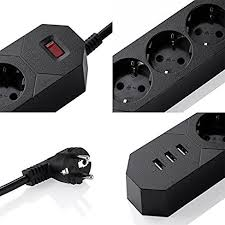
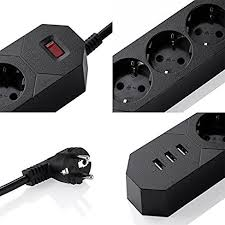

la multiprise a résolu bien des problèmes dans nos vies. tout d'abord elle a permis a tous les amateurs de nouvelles technologies de pouvoir brancher à leur guise leurs petites merveilles sans avoir à batailler pour savoir qui aurait l'exclusivité de la prise! plus qu'un outil d'ordre electrique c'est aussi une veritable arme de diplomatie qui a permis d'instaurer une véritable égalité d'accès aux nouvelles technologies.
"une multiprise incroyable"